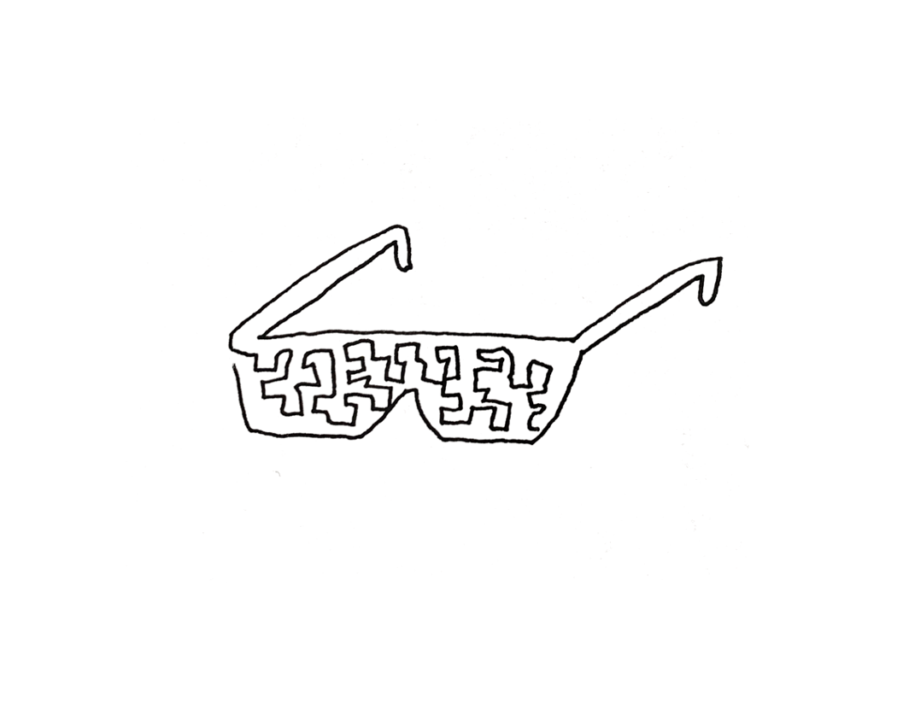
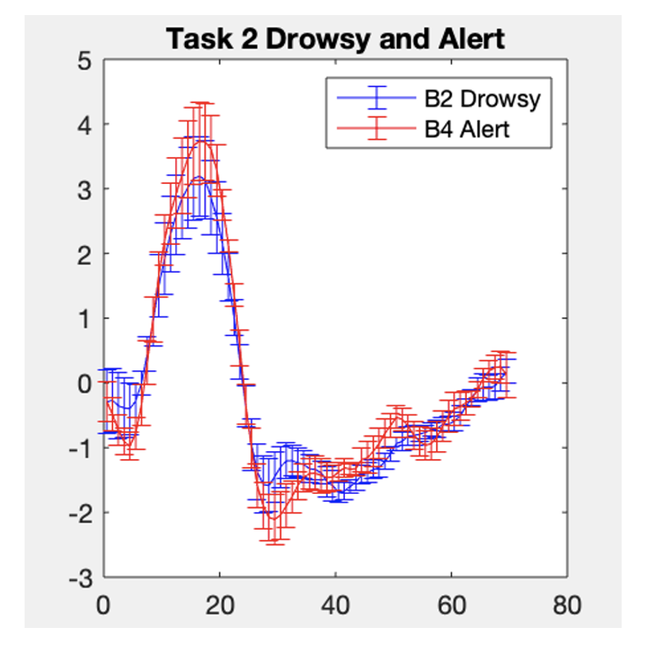
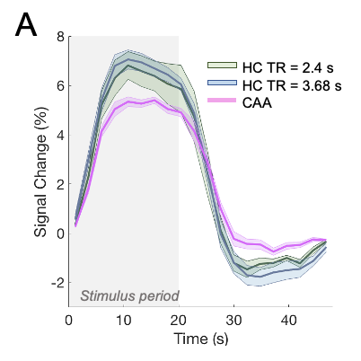
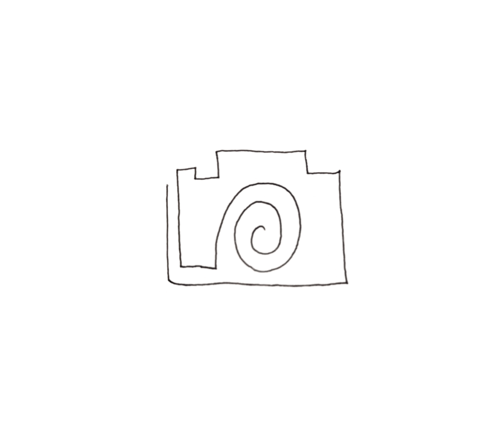


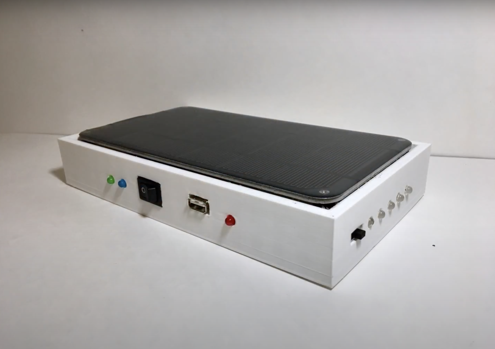
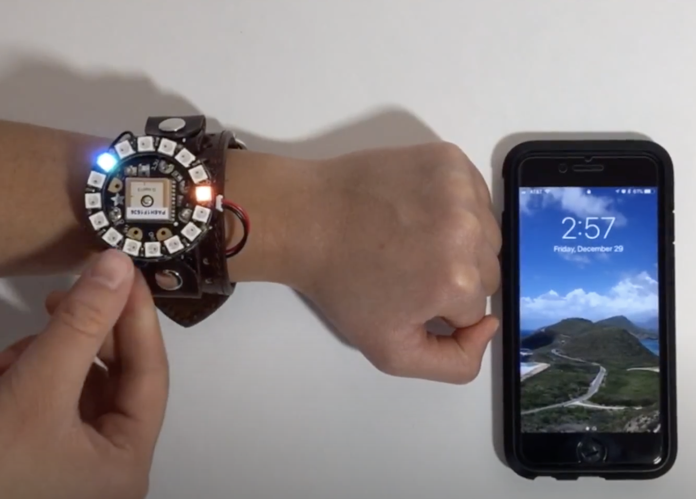
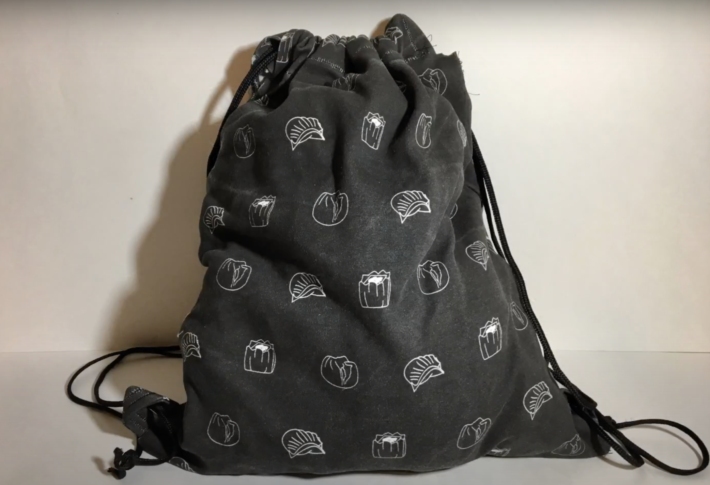
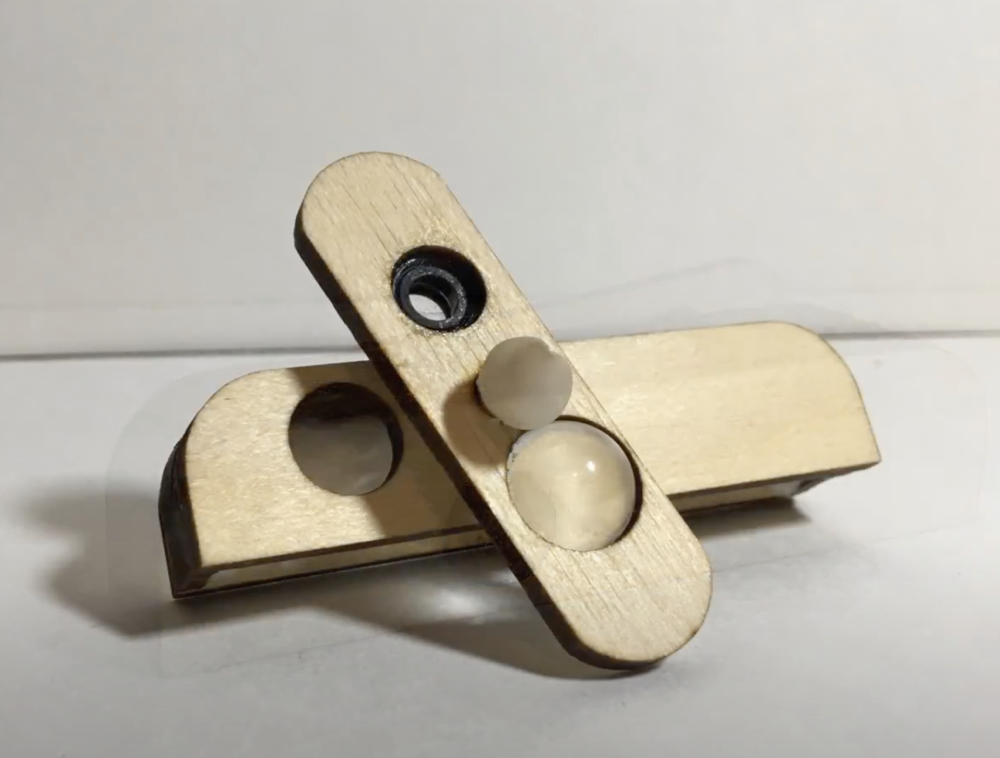
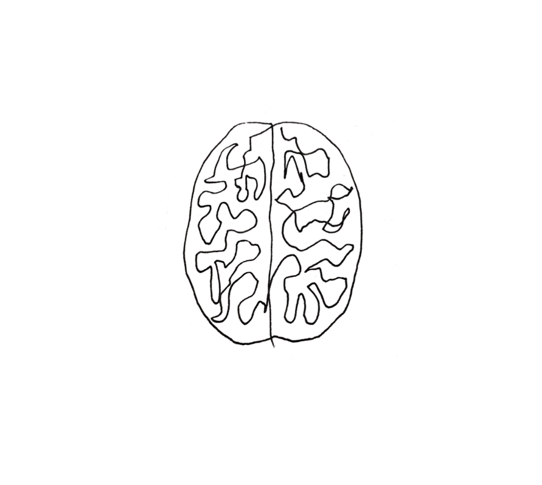
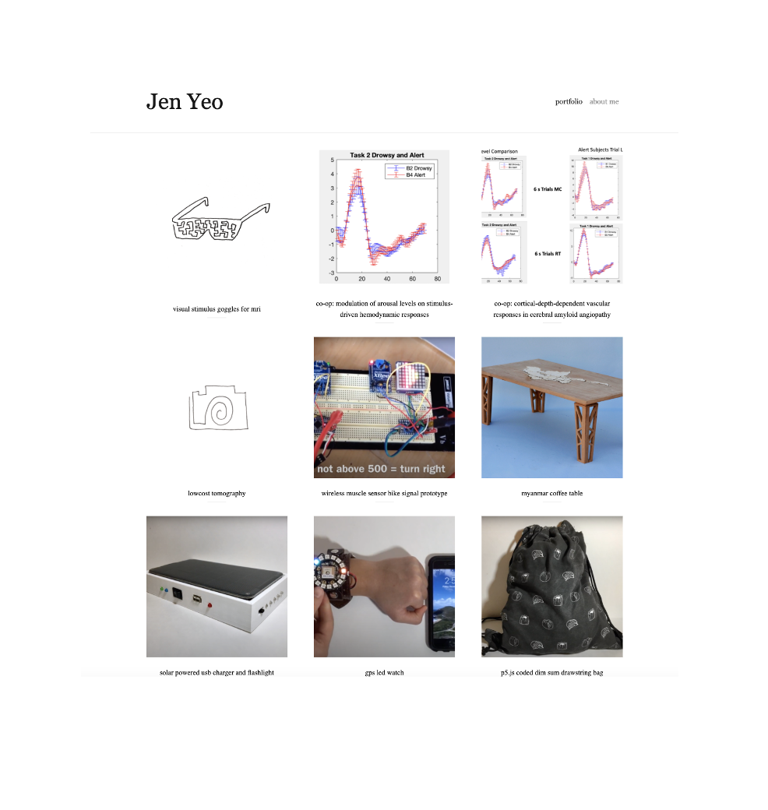










I built a table that has a map of Myanmar on it. With most of my family living in Myanmar, this table represents that my family will always be there with me. The table is a representation of family living across the globe but still being connected. I faced many challenges throughout the process of making the table (such as properly cutting the wood, or using the bandsaw to cut the exact map pieces out); however, with every new challenge, a new spark of motivation appeared. I take special pride in this table because I felt like I made something with meaning to it, something that will connect me with my family from miles and miles away.
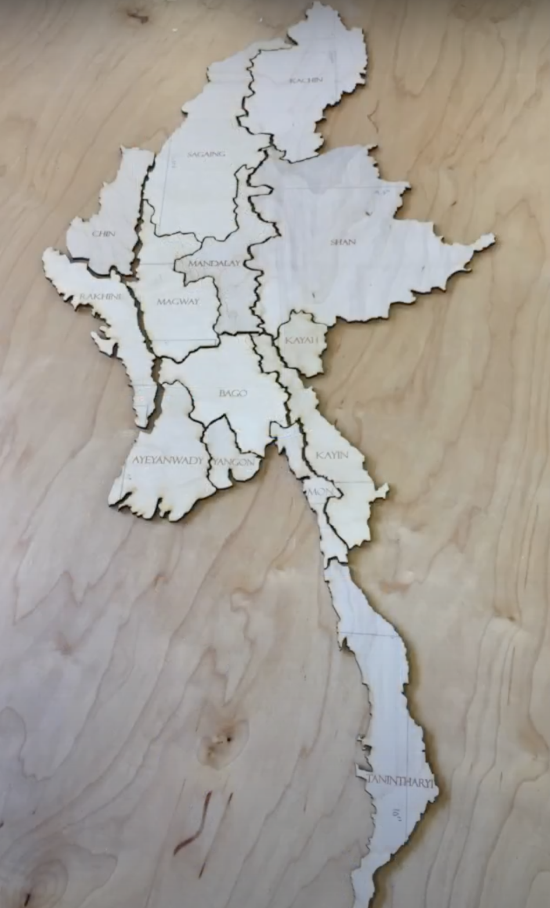
In the class called Circuits and Electronics: Device Invention, the assignment was to invent something useful that had not already been invented. Initially, I was going to create a device similar to a back brace for scoliosis, however, the project needed to be scaled back. As I was brainstorming, I recalled the time a few years ago when I fell off my bicycle because I had to lift my arm to signal a turn. I was inspired to create technology that would help amateur bikers have an easier and safer time on the road.
View the Code Here|
Copyright © Jen Yeo 2021 |